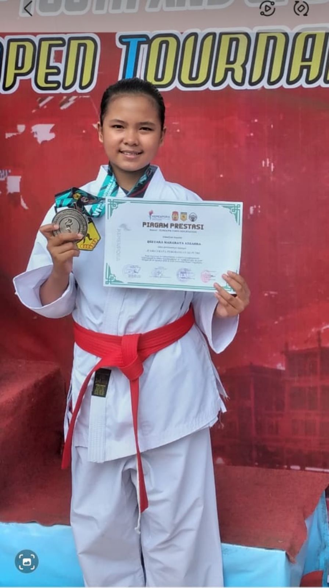
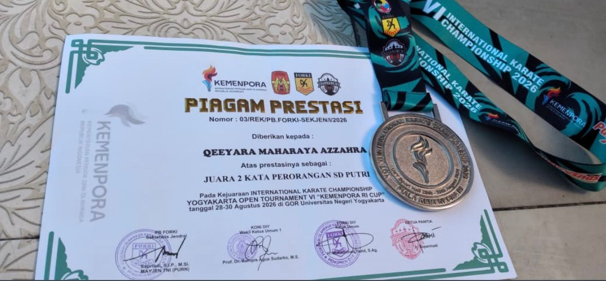

🥈 Siswa SDN 1 Sukamanah Raih Juara 2 pada International Karate Championship Yogyakarta Open Tournament VI 2026
Prestasi membanggakan kembali ditorehkan oleh siswa SDN 1 Sukamanah. Qeeyara Maharaya Azzahra berhasil meraih Juara 2 Kata Perorangan SD Putri dalam ajang International Karate Championship Yogyakarta Open Tournament VI 2026 – Kemenpora RI Cup.
Kejuaraan karate tingkat internasional tersebut diselenggarakan pada 28–30 Agustus 2026 di GOR Universitas Negeri Yogyakarta (UNY). Ajang Yogyakarta Open Tournament VI 2026 diikuti ribuan karateka dari berbagai daerah di Indonesia serta peserta dari luar negeri. Berdasarkan pemberitaan penyelenggaraan YOT VI, sekitar 5.100 atlet dari 20 provinsi serta tiga negara, yaitu Filipina, Nigeria, dan Papua Nugini, mengikuti kompetisi tersebut.
Dalam kompetisi tersebut, Qeeyara tampil pada nomor Kata Perorangan SD Putri. Dengan kemampuan teknik, konsentrasi, kedisiplinan, serta keberanian dalam bertanding, Qeeyara berhasil menunjukkan penampilan terbaiknya hingga meraih peringkat kedua.
Prestasi ini menjadi kebanggaan tersendiri bagi keluarga besar SDN 1 Sukamanah. Keberhasilan Qeeyara menunjukkan bahwa siswa tidak hanya mampu berkembang dalam bidang akademik, tetapi juga dapat mengembangkan bakat dan potensi di bidang olahraga hingga mampu berprestasi dalam kompetisi tingkat internasional.

Pencapaian tersebut tentunya tidak terlepas dari semangat berlatih, kerja keras, dukungan orang tua, pelatih, serta berbagai pihak yang terus memberikan motivasi kepada Qeeyara untuk mengembangkan kemampuan dalam olahraga karate.
Keluarga besar SDN 1 Sukamanah mengucapkan selamat dan memberikan apresiasi setinggi-tingginya kepada Qeeyara Maharaya Azzahra atas prestasi yang telah diraih.
Semoga keberhasilan ini menjadi motivasi untuk terus berlatih, meningkatkan kemampuan, dan meraih prestasi yang lebih tinggi pada kejuaraan berikutnya.
Prestasi Qeeyara juga diharapkan dapat menjadi inspirasi bagi seluruh siswa SDN 1 Sukamanah untuk berani mengembangkan bakat dan potensi masing-masing serta terus berusaha memberikan yang terbaik.
Prestasi: Juara 2 Kata Perorangan SD Putri
Nama: Qeeyara Maharaya Azzahra
Kejuaraan: International Karate Championship Yogyakarta Open Tournament VI 2026 – Kemenpora RI Cup
Tempat: GOR Universitas Negeri Yogyakarta (UNY)
Tanggal: 28–30 Agustus 2026
Terus berprestasi dan mengharumkan nama SDN 1 Sukamanah!